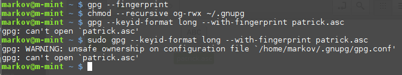

Tor Browser Downloader (AnonDist)
update-torbrowser
http://rqef5a5mebgq46y5.onion/
None of these three options works.
I updated everything.
I used this guide by the way: https://www.whonix.org/wiki/VirtualBox.
What do?

Tor Browser Downloader (AnonDist)
update-torbrowser
http://rqef5a5mebgq46y5.onion/
None of these three options works.
I updated everything.
I used this guide by the way: https://www.whonix.org/wiki/VirtualBox.
What do?
Hi user5
It will be difficult to help with the limited information you provided. For starters did you verify the Gateway and Workstation images? Also when you used Tor Browser Downloader what error messages did you get?

I wasn’t able to verify the images.
More in the attachments.
Hi user5
Its important not to post information that can be used to identify you For example IP addresses from configuration files, logs, any personal information. I’m hoping the screen shot of your terminal does not include part of your name in it ******@m-mint ~ $
The problem you are having has to do with file permissions/ownership. Could you provide the output from these two commands:
ls -l ~/.gnupg
ls -l ~/.gnugp/gpg.conf
That’s a nickname I don’t share anywhere; I picked it when installing Mint.
It’s not my real name, would that still be a problem?
markov@m-mint ~ $ ls -l ~/.gnupg
total 16
-rw------- 1 markov markov 9398 Nov 14 01:02 gpg.conf
-rw------- 1 markov markov 0 Nov 14 01:02 pubring.gpg
-rw------- 1 markov markov 0 Nov 14 01:06 secring.gpg
-rw------- 1 markov markov 40 Nov 14 01:02 trustdb.gpg
markov@m-mint ~ $ ls -l ~/.gnugp/gpg.conf
ls: cannot access '/home/markov/.gnugp/gpg.conf': No such file or directory
markov@m-mint ~ $You chose a version that no longer exists on the server. Pick the latest stable version - currently 7.0.10.
QUESTION: Download now?
n/7.0.6/7.0.7/7.0.8/7.0.9/7.0.10/7.5a5/7.5a6/7.5a7?
7.0.10
INFO: Version 7.0.10 chosen.
A feature of Whonix is that everyone who uses it is user@host. If you want to be special, that’s up to you - but kind of defeats the purpose.
https://www.whonix.org/wiki/Features#cite_note-13
https://www.whonix.org/wiki/Other_Operating_Systems#Whonix-GNU.2FLinux-Workstation
In some respects, pseudonymity is harder to maintain than anonymity because you have to keep track of which pseudonym is doing what and more importantly, which pseudonym has done what throughout its history. This is what happens when your username becomes a top search result: https://stackoverflow.com/users/1249338/frosty
Hi user5
I realized that… Warning: unsafe ownership on config file is just a warning and do not believe its the reason you are unable to open 'patrick.asc'. Sorry for the mistake.
Did you download the Whonix images, the signing key and the OpenPGP signatures into /home/markov/ ? If not you will have to move to the directory that you download those into. If your Downloads directory has those files it would be:
cd /home/markov/Downloads
Then you can proceed with verification
No, I didn’t.
I was blindly following this guide: https://www.whonix.org/wiki/Whonix_Signing_Key.
Moreover, I had put patrick.asc in home instead of home/markov.
Now, this is the situation:
markov@host ~ $ ls -l
total 4080948
drwxr-xr-x 2 markov markov 4096 Nov 14 05:10 Desktop
drwxr-xr-x 4 markov markov 4096 Nov 15 01:06 Documents
drwxr-xr-x 3 markov markov 12288 Nov 15 01:35 Downloads
drwxr-xr-x 2 markov markov 4096 Nov 13 18:15 Music
-rw-rw-r-- 1 markov markov 40603 Nov 14 01:05 patrick.asc
drwxr-xr-x 2 markov markov 4096 Nov 15 00:56 Pictures
drwxr-xr-x 2 markov markov 4096 Nov 13 18:15 Public
drwxr-xr-x 2 markov markov 4096 Nov 13 18:15 Templates
drwxr-xr-x 2 markov markov 4096 Nov 13 18:15 Videos
drwx------ 4 markov markov 4096 Nov 14 01:39 VirtualBox VMs
-rw-rw-r-- 1 markov markov 1974544384 Nov 14 00:01 Whonix-Gateway-13.0.0.1.4.ova
-rw-rw-r-- 1 markov markov 996 Nov 15 01:32 Whonix-Gateway-13.0.0.1.4.ova.asc
-rw-rw-r-- 1 markov markov 2204222976 Nov 14 00:03 Whonix-Workstation-13.0.0.1.4.ova
-rw-rw-r-- 1 markov markov 1004 Nov 15 01:33 Whonix-Workstation-13.0.0.1.4.ova.asc
And this is where I am stuck now:
markov@host ~ $ gpg --fingerprint
markov@host ~ $ chmod --recursive og-rwx ~/.gnupg
markov@host ~ $ gpg --keyid-format long --with-fingerprint patrick.asc
gpg: no valid OpenPGP data found.
gpg: processing message failed: eofThank you.
That worked.
I’m not markov@m-mint on Whonix though, just on the computer I use to run Whonix through VirtualBox.
I just used this guide
to change my hostname, and now markov@host appears on the terminal.
Now I’m going to find out how to change the username as well, which seems a bit more difficult.
Hi user5
Could you remove the current ‘patrick.asc’ and download it again into /home/markov. Its possible the file was corrupted.Then try:
gpg --keyid-format long --with-fingerprint patrick.asc
markov@host ~ $ gpg --keyid-format long --with-fingerprint patrick.asc
pub 4096R/8D66066A2EEACCDA 2014-01-16 Patrick Schleizer <adrelanos@riseup.net>
Key fingerprint = 916B 8D99 C38E AF5E 8ADC 7A2A 8D66 066A 2EEA CCDA
sub 4096R/3B1E6942CE998547 2014-01-16 [expires: 2021-04-17]
sub 4096R/10FDAC53119B3FD6 2014-01-16 [expires: 2021-04-17]
sub 4096R/CB8D50BB77BB3C48 2014-01-16 [expires: 2021-04-17]
markov@host ~ $ gpg --import patrick.asc
gpg: key 2EEACCDA: public key "Patrick Schleizer <adrelanos@riseup.net>" imported
gpg: Total number processed: 1
gpg: imported: 1 (RSA: 1)
gpg: no ultimately trusted keys found
I downloaded the file again and seems like it worked.
Thank you very much for your help.
HI user5
Glad to hear!
Very important you complete:
Any more problems and I am happy to help 
{kind=link}